事件监控
事件监控对云平台核心资源的部分关键操作行为进行了事件级定义，并按不同时间周期对其进行统一汇总统计与展示。除此之外，用户可对关注的事件进行告警策略的设置，在被监控事件触发后可通过云平台完整地监控告警服务，及时通知、定位并处理问题。
操作指南
查看事件监控
-
查询方式 登录管理控制台，选择产品与服务 > 监控服务 > 云监控 CloudSat，进入云监控页签。选择事件监控，即可看到当前账号下的所有事件统计信息，如下图： 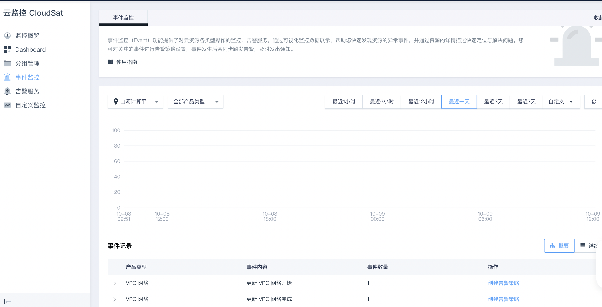
事件监控分别从多种统计时间周期、多类查看模式、快速绑定告警策略等功能上，为用户提供全面、直观地查看体验。以下为具体操作指南：
-
按时间周期选择并查看各时间周期下的监控事件，如下图： 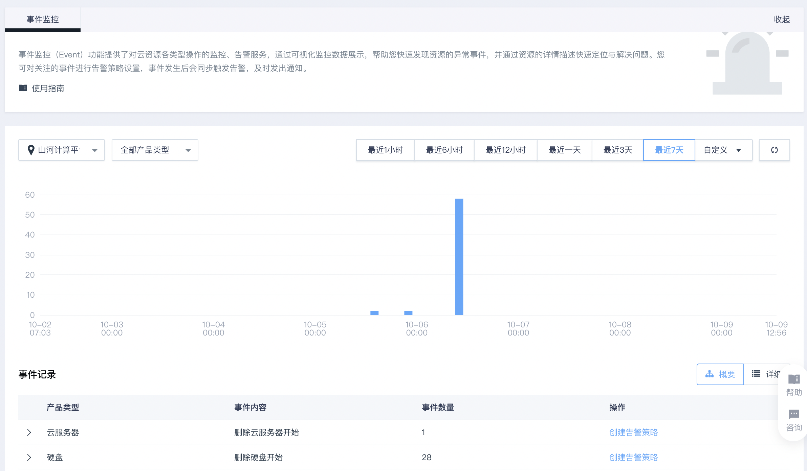
-
按关联条件过滤查询所关注的事件内容，如下图： 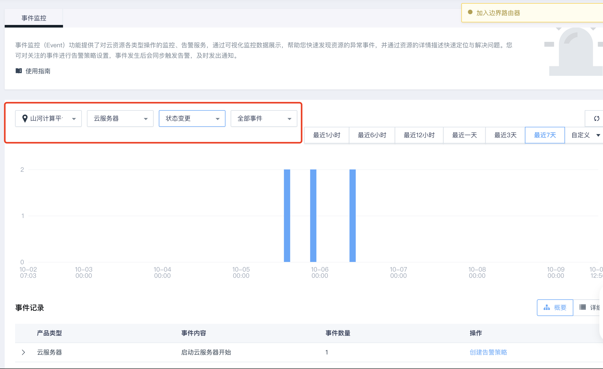
-
可选择任意柱状图，点击后即可按柱状图下钻细查，如下图： 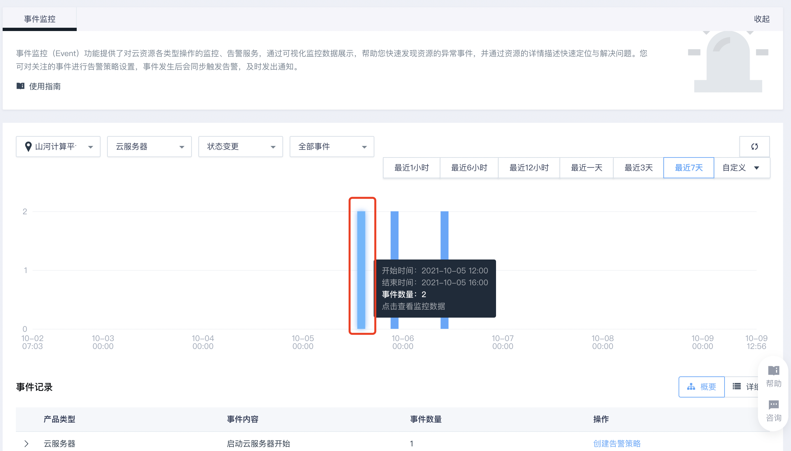
-
-
详情列表查看模式 概要视图模式
概要模式以事件内容为统计单元，将同类事件汇总展示，可展开「操作」栏内，查看各具体事件的详细信息。 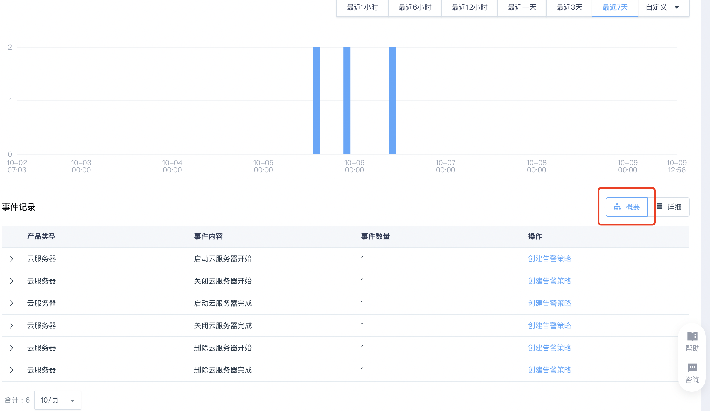
概要视图模式列表核心信息介绍：
| 列名 | 内容介绍 | 功能 |
|---|---|---|
| 产品类型 | 云平台的资源类型，如，云服务器、硬盘、负载均衡器等 | - |
| 事件内容 | 对一个产品类型的触发事件进行状态级的描述，如，将「删除云服务器」事件细化为，删除云服务器开始/删除云服务器结束，两类事件内容 | - |
| 事件数量 | 该列事件内容发生的资源数量统计 | - |
| 操作 | - | 创建告警策略 |
| 区域 | 触发事件的资源区域 | - |
| 产品类型 | 云平台的资源类型，如，云服务器、硬盘、负载均衡器等 | - |
| 事件类型 | 平台对事件定义的类型，如，状态变更、异常等 | - |
| 资源 | 触发事件具体资源的id和名称 | - |
| 创建时间 | 触发事件具体资源的创建时间 | - |
| 操作 | - | 创建或修改告警策略 / 查看事件 |
详细视图模式
将所有事件全部展示出来，在触发平台预置事件较多的情况下，可能会出现列表信息过多的情况，建议您根据资源实际情况选择合适的模式 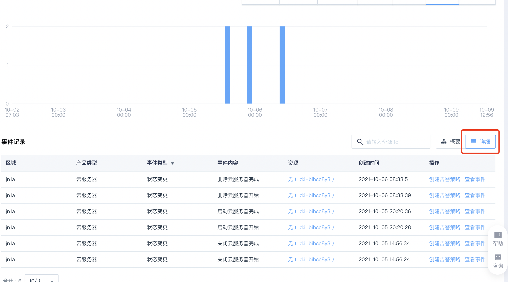
详细视图模式列表核心信息介绍：
| 列名 | 内容介绍 | 功能 |
|---|---|---|
| 区域 | 触发事件的资源区域 | - |
| 产品类型 | 云平台的资源类型，如，云服务器、硬盘、负载均衡器等 | - |
| 事件类型 | 平台对事件定义的类型，如，状态变更、异常等 | - |
| 事件内容 | 对一个产品类型的触发事件进行状态级的描述，如，将「删除云服务器」事件细化为，删除云服务器开始/删除云服务器结束，两类事件内容 | - |
| 资源 | 触发事件具体资源的id和名称 | - |
| 创建时间 | 触发事件具体资源的创建时间 | - |
| 操作 | - | 创建或修改告警策略 / 查看事件 |
-
设置告警策略方式
方式1
-
基于列表详情页「操作」栏内提供的功能入口，直接创建事件监控告警策略，如下图: 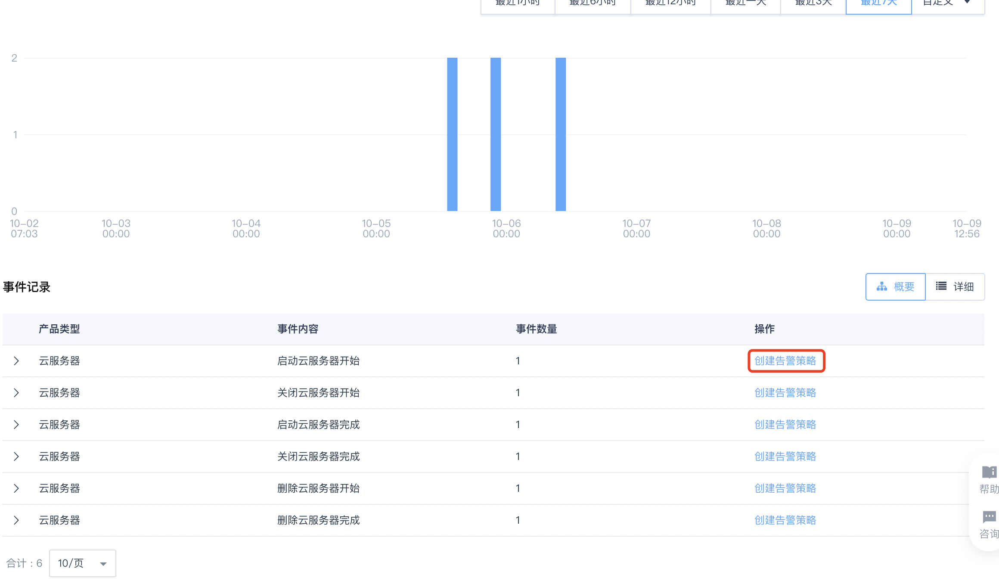
-
点击事件记录列表详情页「操作」栏内的“创建告警策略”，即可在弹框内创建告警策略。 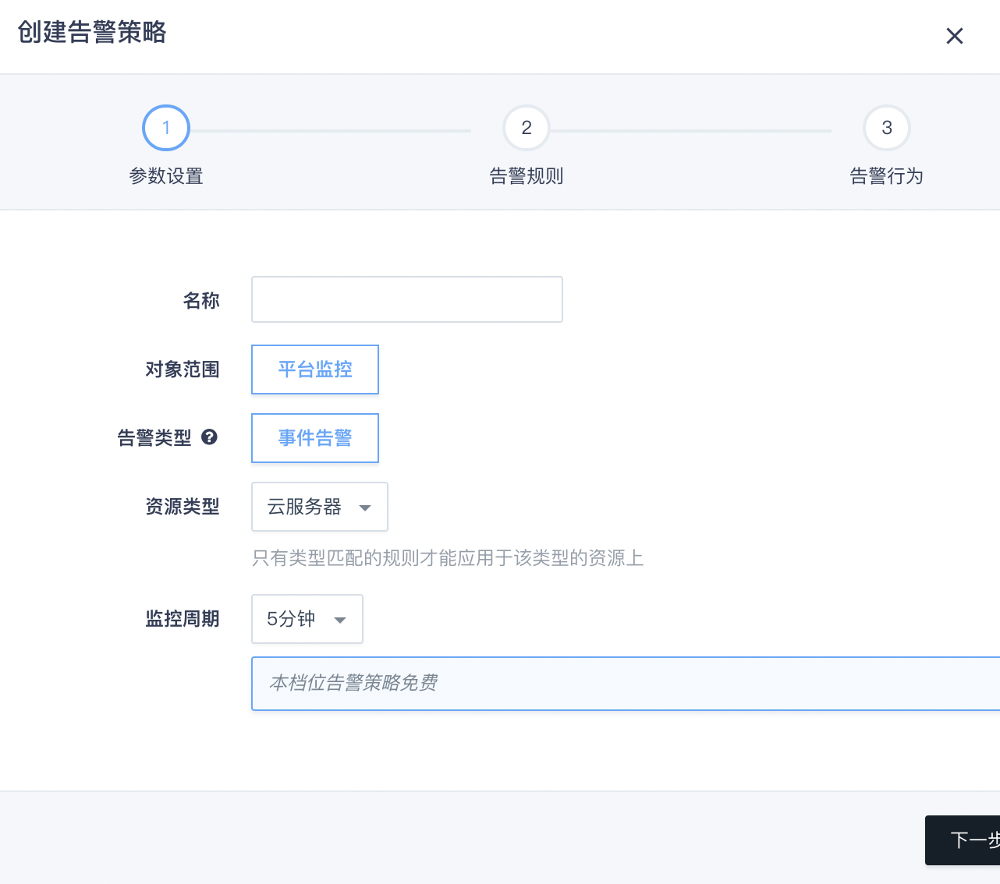
方式2
利用「监控告警」服务常规创建事件监控告警：
-
点击左侧菜单栏「云监控 CloudSat」- 「告警服务」，进入监控告警服务界面，如下图： 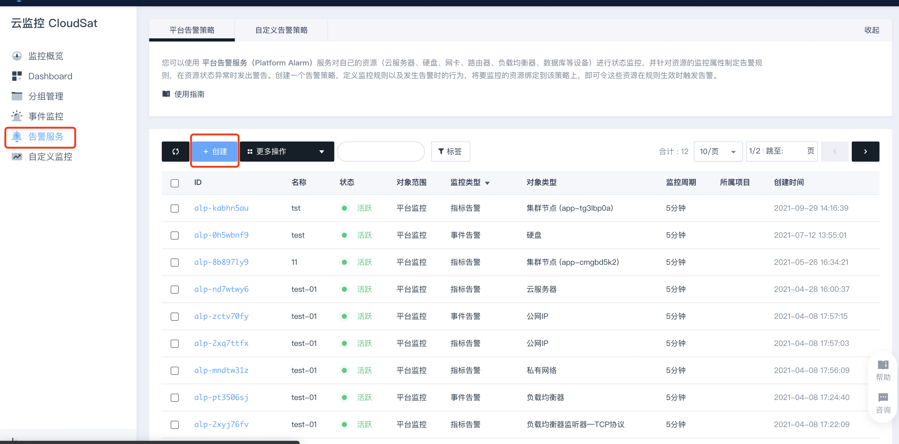
-
点击「创建」按钮，选择事件监控，可创建事件监控告警策略，如下图： 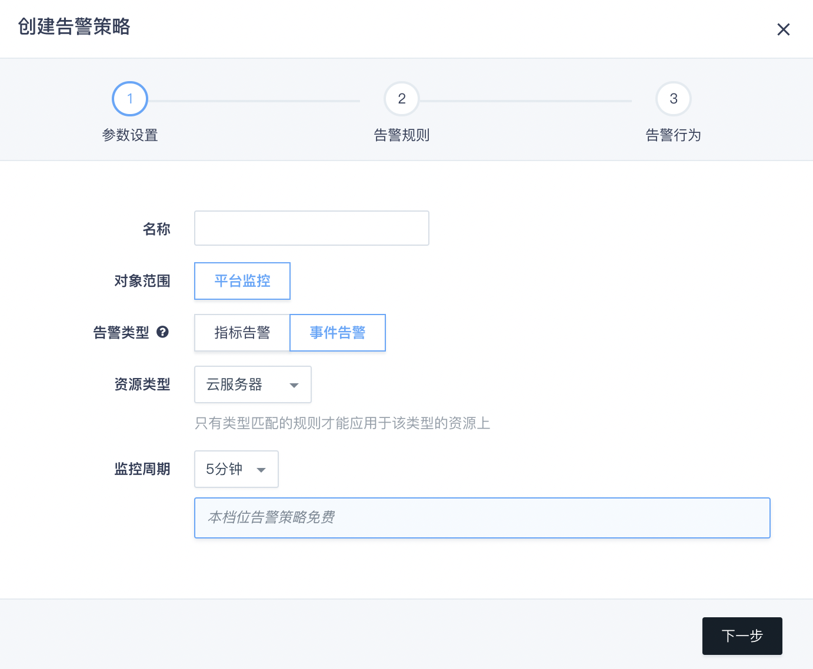
-
-
绑定告警策略方式
方式1：「监控告警」服务
从上述两种路径下创建出的告警策略会统一展示在告警策略列表内，可点击需要绑定具体资源的策略id，如下图，进入策略详情页进行资源绑定。
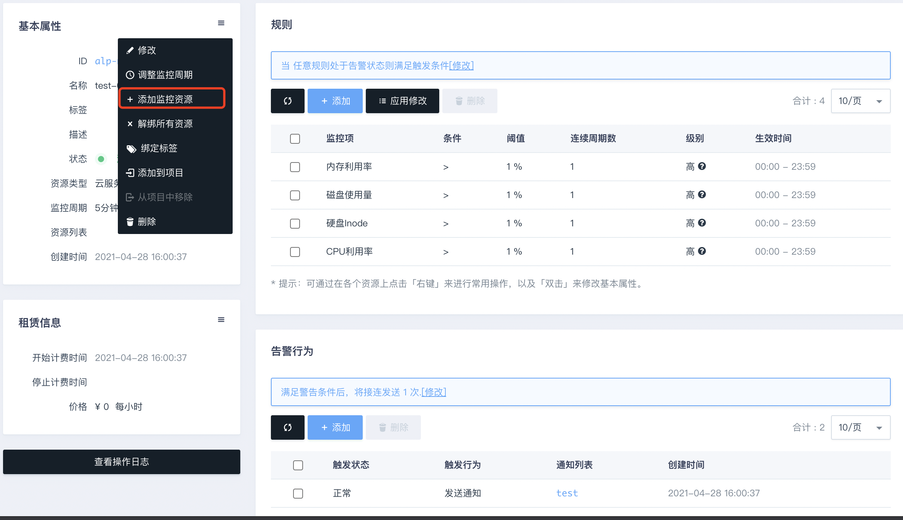方式2: 基于资源列表绑定告警规则
在资源详情列表上，右键资源id，选择「告警策略」 - 「绑定事件告警策略」，即可在弹框内选择需要绑定的具体策略，如下图：
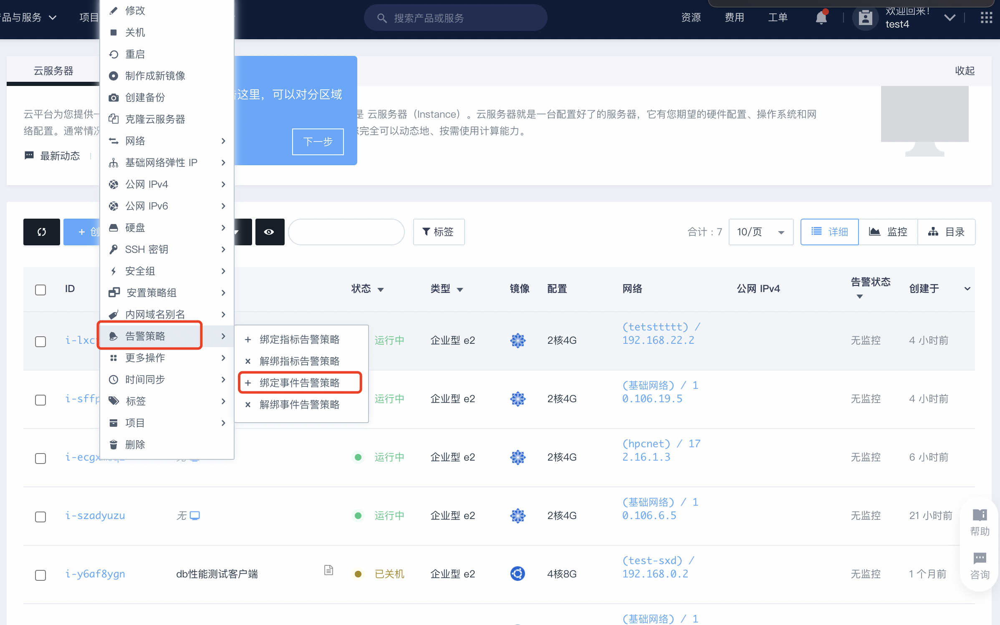 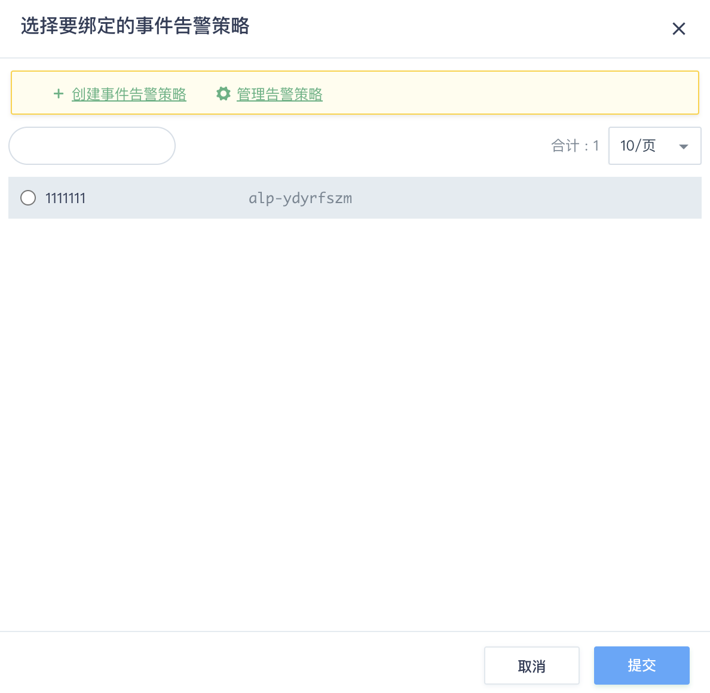 -
查看告警信息
方式1: 通知服务
满足告警策略规则的监控数据会按照策略内设置的通知形式发出告警通知信息，用户可及时查收并定位解决问题。
方式2: 资源详情页查看告警信息
在资源详情页内，可查看到资源的两大类告警信息，如下图，选择「事件告警」即可查看相关告警信息： 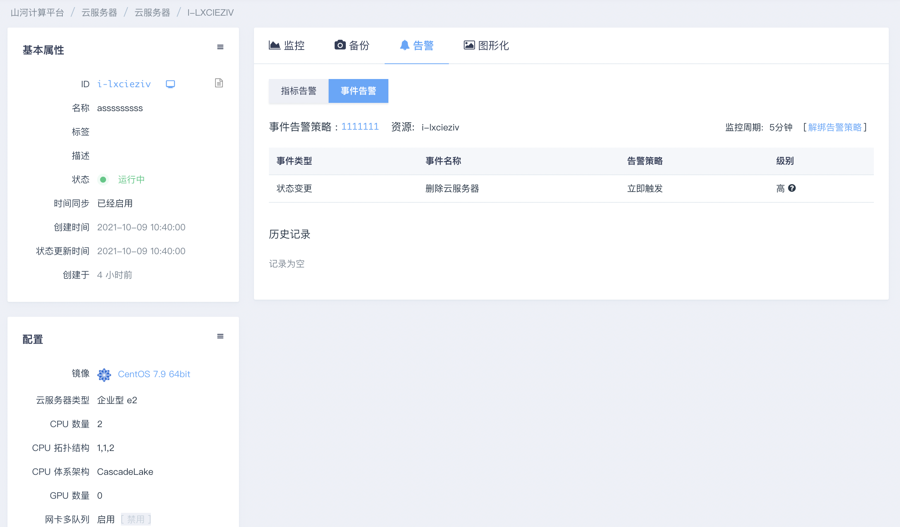